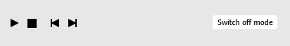

3D training application – user interface
This 3D training application allows you to study the training procedure. You can use the training application in three different modes:
- Demo mode – automatic playback of the procedure. You can play desired steps several times at various speeds and examine the procedure from different angles.
- Study mode – interactive playback of the procedure. You can execute the procedure with the help of various hints.
- Exam mode – testing your knowledge. The procedure should be executed without any hints.
Training environment
The lower pane allows you to select and activate appropriate training mode:

In the Demo and Study modes you can control the playback of the procedure by using a VCR-like control panel:

- Play step starts (stops) the playback of the procedure.
- Reset step stops and rewinds the current step to the beginning.
- Previous step moves the playback to the previous step.
- Next step moves the playback to the next step.
- Switch off mode cancels the current mode.

- Location Allows you to move the camera to the appropriate area of 3D model.
The Operation pane represents expected operation or group of operations. You should read instructions and perform actions, such as enter the requested parameter or select the object that takes part in a procedure:

The upper pane helps you to go through the procedure:

- Document. Displays the part of the document that is associated with the currently active procedure step.
- Instructions. Displays comments associated with the current training step.
- Parts. Displays the list of interactive objects in the current training. Allows you to find objects' location and display additional meta-information.
- Parameters. Displays the list of parameters that are used in the current training. These parameters are used as conditional jumps in the training scenario. You can be asked to enter such a parameter.
Training modes
Demo mode
- To enter this mode, select the Demo mode, then click Activate mode.
- To start the playback, click Play Step. The description of the currently active step is shown on the Document tabbed page.
- The procedure will be displayed continuously.
- To temporarily stop playing, click Pause. Click Play to continue the playback.
- To display the description of the whole procedure, click Document.
- You can navigate in the 3D window (see the Navigation in the 3D window section of this document).
- The Parts tabbed page allows you to highlight the desired part in the 3D window (click locate) and display additional information (click meta).
- To move to the next or previous step of the procedure, click Next step or Previous step.
- To exit the Demo mode, click Switch off mode.
Study mode
- To enter this mode, select the Study mode, then click Activate mode.
- Click Play step to begin study of the procedure. You should follow the instructions appeared in the Operation pane. There are three groups of instructions:
- Locate those parts that are involved in the current procedure step, and then click on them in 3D window or on the Parts tabbed page.
- Choose the correct answer in the choice list.
- Specify a value for a parameter.
- The Skip button allows you to move to the next operation in the training scenario.
- The Test result visually indicates made mistakes (green – correct, red – incorrect). The level of the mistake is specified in the 3D simulation and gradually increases for the current step. Each new step begins with the zero-mistake level.
- Complete all steps and click Switch off mode whenever you ready to exit the Study mode.
Exam mode
- To enter this mode, select the Exam mode, then click Activate mode.
- Click Start to start the test. Here you should execute the actions in the same way as in the Study mode, but the hints are not available any longer.
- To exit the Exam mode, click Switch off mode.
Navigation in the 3D window
You can navigate in the 3D window by using the mouse or the Navigation bar:

To Zoom in / Zoom out 3D model:
- Use the mouse wheel;
- Or click
Zoom
 on the Navigation bar, position the pointer anywhere in the 3D window,
press the left mouse button,
and then move the mouse while holding down its left button.
on the Navigation bar, position the pointer anywhere in the 3D window,
press the left mouse button,
and then move the mouse while holding down its left button.
To move the camera up/down or left/right:
- Position the pointer anywhere in the 3D window, and then move the mouse with the middle button (or mouse wheel) pressed.
- Or click Pan
 on the Navigation bar,
position the pointer over 3D, and move the mouse while holding down its left button.
on the Navigation bar,
position the pointer over 3D, and move the mouse while holding down its left button.
To make 3D model fully visible in the 3D window:
- Click Fit
 on the Navigation bar.
on the Navigation bar.
To rotate 3D model:
- Click Spin
 on the Navigation bar, position the pointer over 3D model, and move the mouse while holding
down its left button.
on the Navigation bar, position the pointer over 3D model, and move the mouse while holding
down its left button.
To specify the rotation center in 3D:
- Press the ALT key and then click any geometry in 3D window.
- Or position the pointer over any geometry in 3D window and then click the middle mouse button (or the mouse wheel).
To go to the next procedure step (animation):
- Click Skip current animation
 .
.
Settings
- Speed. Sets the playback speed for the 3D procedure.
- Freeze viewpoint. If selected, the current viewer position is used during the playback.
- Disable alert message. If selected, blocks alert messages output.
- Enable extra-highlighting of parts in Demo and Study modes. If selected (default value), a semi-transparent blinking sphere appears above the selected in 3D object to attract the trainee attention.
- Continuous playback in the Demo mode. If selected (default value), allows uninterrupted playback of the training procedure. If cleared, the playback stops after each step.
- Enable direct hints in the Study mode. Shows or hides, in the Operation pane, the information about the trainee's actions that should be done. Enabling direct hints allows you to locate the part by using the Locate Part button (it has the name of the required part). In addition, when direct hints are enabled, the correct answers are displayed in the Choice list.
- Show navigation cube. Shows or hides the Navigation Cube in the 3D window. The Navigation Cube has three different types of hotspot areas: Edge, Corner, and Face. When you position the pointer over the edge, corner, or face of the Navigation Cube, the corresponding area is highlighted. With these areas you can switch between standard views and perform rotations.
- Show surface edges. If selected, enables the display of surface boundaries in the 3D window.
- Anti-aliasing. Activates a technique for minimizing the distortion artifacts in the 3D window.
- Ambient occlusion. Activates ambient occlusion shading and rendering technique in the 3D window.
- Outline hovered objects. The selection is outlined.